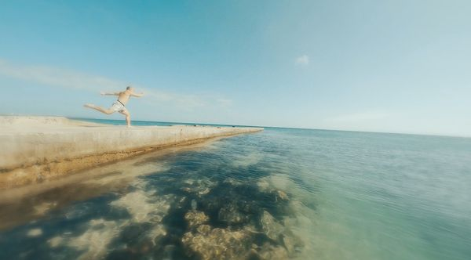

KuanHsiang Liu (Kent)
ผู้ก่อตั้งสตาร์ทอัพ AI · ศิลปินรางวัลระดับชาติ · ครูสองภาษา

ประวัติโดยย่อ
ผมเป็นครูที่ทำงานข้ามสาขา ผสมผสานการเป็นผู้ประกอบการด้าน AI ผลงานสร้างสรรค์ระดับรางวัลแห่งชาติ และการสอนแบบสองภาษา ปัจจุบันเป็นผู้ก่อตั้งแพลตฟอร์ม Grapply AI ผู้ได้รับ รางวัลใหญ่สาขาศิลปะการแสดง จากงาน Taishin Arts Award ครั้งที่ 15 (เกียรติสูงสุดด้านศิลปะของไต้หวัน) และเคยเป็นครูภาษาอังกฤษและภาษาจีนเต็มเวลา ที่โรงเรียน Trakan Phuet Phon จังหวัดอุบลราชธานี (2024–2025)
คุณค่าที่ไม่เหมือนใครของผมอยู่ตรงจุดตัดของสามตัวตน: ผู้ก่อตั้งสตาร์ทอัพ AI ที่สร้างผลิตภัณฑ์จริง ศิลปินรางวัลแห่งชาติที่ใช้ AI ในงานเวทีมืออาชีพ และครูสองภาษาที่มีประสบการณ์ในห้องเรียนไทย สิ่งที่ผมนำมาให้นักเรียน Montfort ไม่ใช่แค่วิธีใช้เครื่องมือเขียนโค้ด — แต่คือ วิธีใช้ AI และเครื่องมือดิจิทัลเพื่อเล่าเรื่องของตัวเองและสร้างแอปเล็ก ๆ ของตัวเอง
เกี่ยวกับ Grapply — แพลตฟอร์ม AI ที่ผมก่อตั้ง
Grapply เป็นแพลตฟอร์ม AI SaaS ที่ผมสร้างและดำเนินการด้วยตัวเอง ช่วย SME เขียนเอกสารขอทุนสนับสนุนจากรัฐบาลด้วย AI ในไต้หวัน เอกสารขอทุน 40–50 หน้าตามปกติต้องใช้เวลา หลายสัปดาห์ถึงหลายเดือน และมีค่าที่ปรึกษา 50,000–150,000+ ดอลลาร์ไต้หวันใหม่ Grapply ย่อขั้นตอนทั้งหมดนี้เหลือ ไม่ถึงสองชั่วโมง ด้วยการแนะนำแบบสนทนา การค้นหาความรู้ RAG และการสร้างเอกสารอัตโนมัติ
- บทบาทของผม
- ผู้ก่อตั้งคนเดียว — ออกแบบผลิตภัณฑ์ workflow AI พัฒนา full-stack และการตลาด
- วิธีการของผม
- workflow "Vibe Coding" ที่ใช้ AI ช่วย ขับเคลื่อนด้วย Claude Code, Claude, Cursor, ChatGPT และ Gemini — ผมนำทางเรื่องตรรกะผลิตภัณฑ์และการตัดสินใจออกแบบ AI จัดการรายละเอียดการพัฒนา
ประสบการณ์นี้ทำให้ผมเข้าใจอย่างลึกซึ้งว่าเด็ก ๆ ต้องการอะไรจริง ๆ ในยุค AI: ไม่ใช่การท่องจำไวยากรณ์ แต่เป็น การเรียนรู้ว่าจะเปลี่ยนความคิดของพวกเขาให้กลายเป็นผลงานจริงที่ใช้ได้ด้วยความช่วยเหลือของ AI ได้อย่างไร
ผลงานสร้างสรรค์ — รางวัลระดับชาติและ AI ในศิลปะมืออาชีพ
ผมเป็นหนึ่งในไม่กี่คนในไต้หวันที่มีทั้ง เกียรติศิลปะระดับชาติ และได้นำ AI เชิงสร้างสรรค์มาประยุกต์ใช้ในงานเวทีระดับมืออาชีพ:
"KIDS" (我知道的太多了)
ผู้ชนะ รางวัลใหญ่สาขาศิลปะการแสดง Taishin Arts Award ครั้งที่ 15 (เกียรติสูงสุดด้านศิลปะของไต้หวัน) ได้รับเชิญแสดงในเทศกาลนานาชาติที่เดนมาร์ก แคนาดา (PuSh Festival) เยอรมนี (Tanzmesse NRW) ปักกิ่ง ฮ่องกง และสิงคโปร์
 ชมบน YouTube · KIDS
ชมบน YouTube · KIDS
"The Metamorphosis" (變形記)
ภาพยนตร์ออนไลน์ที่ผมเขียนบทและกำกับเอง ได้รับการเสนอชื่อเข้าชิงรางวัล Taiwan Award ในเทศกาลภาพยนตร์เถาหยวน

"SH0VA" (濕婆神)
ได้รับเชิญโดย ธนาคาร Taishin ให้แสดงในงานย้อนรอย Taishin Arts Award ผลงานนี้ใช้ ภาพที่สร้างโดย AI จำนวนมาก เป็นภาพแกนหลักของเวที — เป็นผลงานเรือธงของผมที่ผสาน AI เชิงสร้างสรรค์เข้ากับโรงละครมืออาชีพ